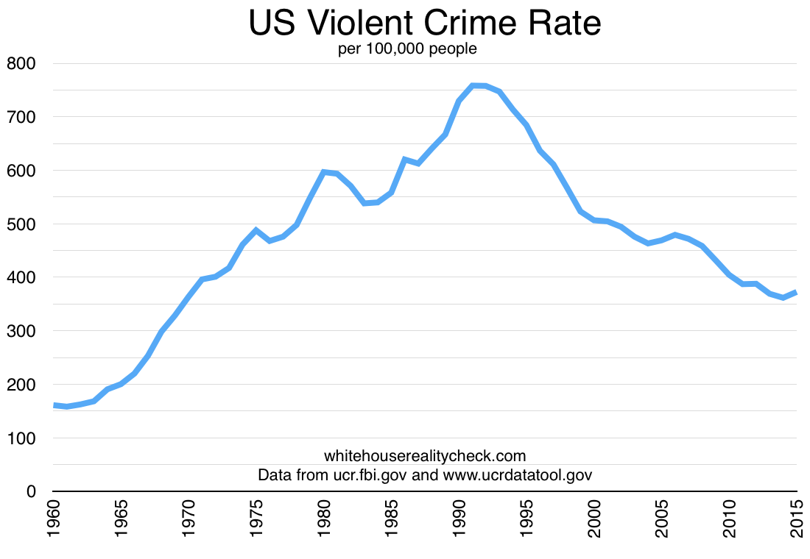

Standing Up For Our Law Enforcement Community
One of the fundamental rights of every American is to live in a safe community. A Trump Administration will empower our law enforcement officers to do their jobs and keep our streets free of crime and violence. The Trump Administration will be a law and order administration. President Trump will honor our men and women in uniform and will support their mission of protecting the public. The dangerous anti-police atmosphere in America is wrong. The Trump Administration will end it.
Reality: The anti-police atmosphere has increased because video-recording phones have shined a light on police misconduct that's always been occuring.
The Trump Administration is committed to reducing violent crime. In 2015, homicides increased by 17% in America’s fifty largest cities. That’s the largest increase in 25 years. In our nation’s capital, killings have risen by 50 percent. There were thousands of shootings in Chicago last year alone.
Reality: The rate of violent crime has dropped to levels not seen since the 1960s.


Our country needs more law enforcement, more community engagement, and more effective policing.
Our job is not to make life more comfortable for the rioter, the looter, or the violent disrupter. Our job is to make life more comfortable for parents who want their kids to be able to walk the streets safely. Or the senior citizen waiting for a bus. Or the young child walking home from school.
Supporting law enforcement means supporting our citizens’ ability to protect themselves. We will uphold Americans’ Second Amendment rights at every level of our judicial system.
Reality: Of the 15,809 homicide victims in the US in 2014, 10,945 were killed with a gun. This is a far higher rate than any other highly developed country in the world.

President Trump is committed to building a border wall to stop illegal immigration, to stop the gangs and the violence, and to stop the drugs from pouring into our communities. He is dedicated to enforcing our border laws, ending sanctuary cities, and stemming the tide of lawlessness associated with illegal immigration.
Reality: The number of border crossings from Mexico have already decreased by 90% in the last decade.
.
Supporting law enforcement also means deporting illegal aliens with violent criminal records who have remained within our borders.
Reality: Of the 11 million undocumented immigrants in the country, the Department of Homeland Security reported that there were 1.9 million "removable criminal aliens". But this number includes people who committed non-violent crimes, as well as lawful permanent residents and people with temporary visas. So the number of undocumented immigrants who have violent criminal records is far lower than the 2-3 million that Trump has promised to deport, and we already have effective policies for deporting them.

It is the first duty of government to keep the innocent safe, and President Donald Trump will fight for the safety of every American, and especially those Americans who have not known safe neighborhoods for a very long time.
Reality: Trump's policies will result in less effective and fair law enforcement, and by scapegoating immigrants he betrays his own immigrant grandparents.
Here's how Abraham Lincoln felt about the anti-immigration party in the 1850s: "As a nation, we begin by declaring that 'all men are created equal.' We now practically read it 'all men are created equal, except negroes.' When the Know-Nothings get control, it will read 'all men are created equal, except negroes, and foreigners, and catholics.' When it comes to this I should prefer emigrating to some country where they make no pretence of loving liberty-to Russia, for instance, where despotism can be taken pure, and without the base alloy of hypocracy."